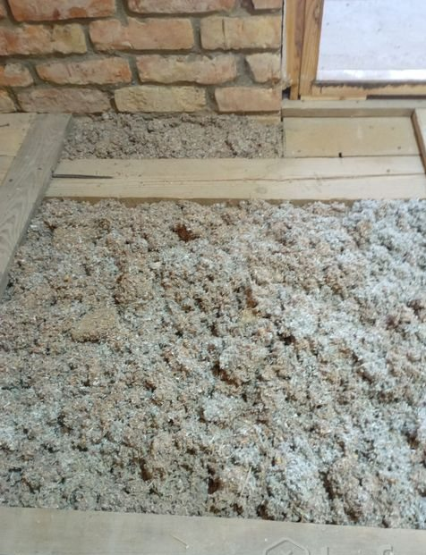
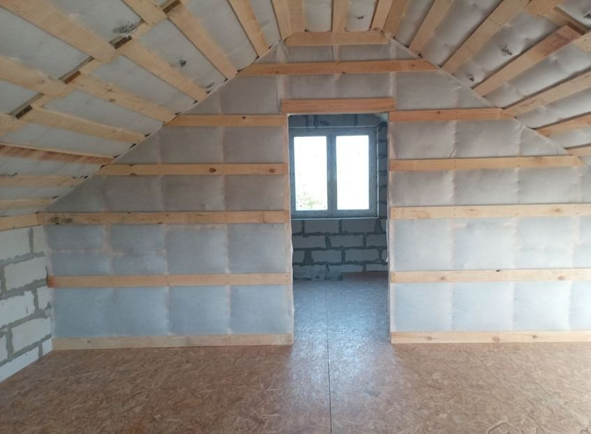
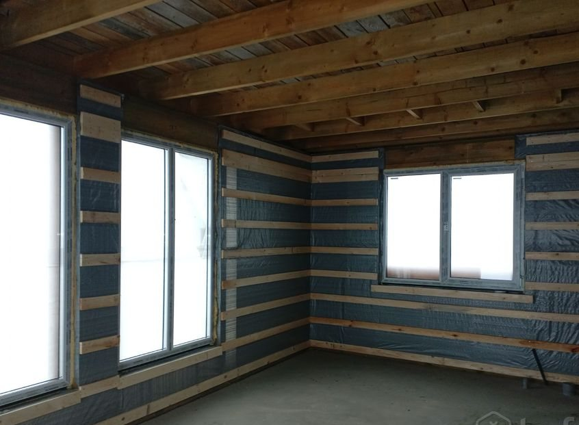
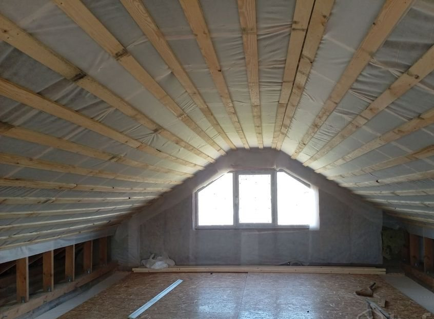
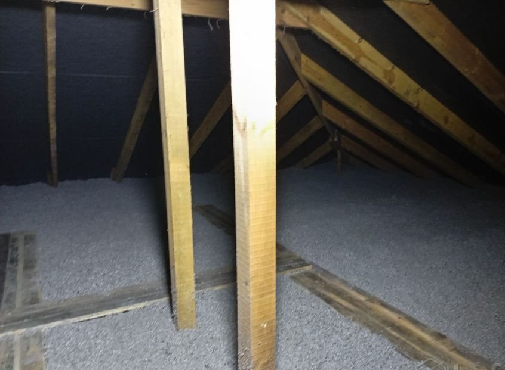
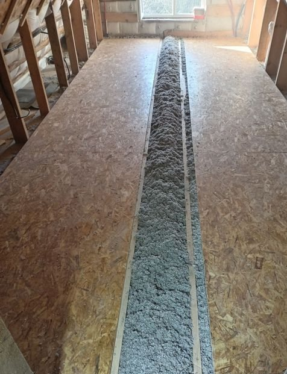
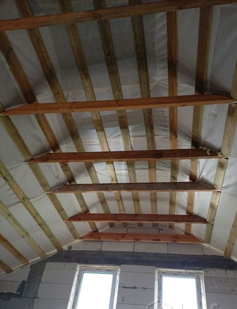
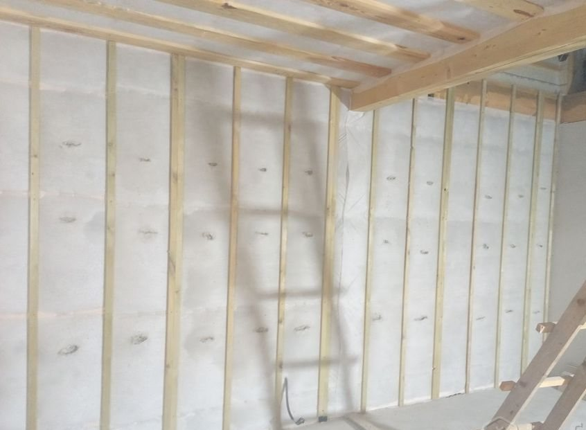

КРОВЛЯ
Утепляем кровельные конструкции с учётом доступа к полостям и подготовки основания.

Эковата заполняет полости между конструкциями. Мы готовим основание, выполняем утепление кровли и перекрытий, работаем с каркасными строениями и труднодоступными нишами.
ИП Юхно Виктор Викторович · более 10 лет опыта по объявлению
Волокно проходит туда, где останется пустота при ручной укладкеНажмите и проведите пальцем или курсором по пустым ячейкам под кровлей.
Наведите сопло и удерживайте кнопку мыши или коснитесь экрана. Каждая полость заполняется волокном; холодные участки на иллюстрации исчезают.
* Это наглядная иллюстрация, не теплотехнический расчёт. Способ, толщина и объём утепления определяются на замере.
Утепляем кровельные конструкции с учётом доступа к полостям и подготовки основания.

Заполнение пространства между балками и в конструкциях пола.
Утепление внутренних полостей каркасных конструкций.
Работа с закрытыми и сложными по форме участками после оценки доступа.
Подшивка плёнкой и доской, выравнивание полов и другие необходимые подготовительные работы.
Сопутствующие работы по согласованию с заказчиком.

Утепление работает как система: состояние основания и подготовка полости имеют значение. Поэтому перед задувкой оцениваем конструкцию на месте.





Замер и консультация бесплатно. Стоимость работ договорная: зависит от конструкции, объёма, доступа и подготовки. Согласуем её после осмотра.